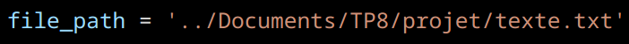

Dans le cadre de ce projet, notre objectif premier était de repérer les expressions qui ont fait l'actualité au fil du temps dans les publications de différents journaux en ligne.
Ainsi, ce rapport vise à décrire et commenter entre le livrable que nous avons reçu et les objectifs initiaux de ce projet. En effet, pour chaques parties nous répondrons à différentes questions : Est-ce que cela marche ? / Qu'est ce qui marche ou pas ?, ou encore Comment cela fonctionne ? / Pourquoi cela ne fonctionne pas ?. Pour cela, vous pouvez naviguer facilement à travers les différents chapitres en utilisant le menu/sommaire à droite :)
Dans le cadre de ce projet, notre équipe est composée des meilleures spécialistes dans le domaine du Traitement Automatique des Langues. Ainsi, chaque spécialiste était responsable des points correspondants :
L'équipe
Travail
Lydia
Chargée des points 1, 2 et 3
Patricia
Responsable Chef des points 4, 5 et 6
Lise
Leader des points 7, 8 et 9
Cette répartition a permis à notre Team d'attribuer les tâches en fontion des compétences individuelles et des préférences. Ainsi, la confiance et la collaboration entre les membres de l'équipe a contribué de façon efficace pour atteindre tous les objectifs dans le délai fixé.
1. RSS partie 1 : lire un flux unique de trois façons : avec re, etree ou feedparser
Pour ce chapitre, l'objectif est de lire un flux de données unique qui est un fichier xml de différentes manières données en option.
Dans un premier temps, il fallait juste écrire un programme qui donnait à l'utilisateur la possibilité de choisir un mode de lecture d'un fichier xml parmis les trois déjà cités en dessus. Pour cela, les membres de cette équipe ont pris le choix de n'utiliser que feedparser et etree en mettant de côté les expressions régulières. D'une part, nous pouvons comprendre ce choix car cela pouvait être plus adapté lorsque nous travaillons avec des formats de données structurées tels que les flux RSS, Atom et XML. Ils offrent une meilleure abstraction pour travailler avec ces formats spécifiques et peuvent simplifier le processus d'extraction des informations requises.
Puisque le programme sur lequel nos camarades avaient travaillé a été modifié au fil des TP, cette fonctionnalité ne peut plus être exploitée, et donc ne fonctionne pas. Ainsi, nous avons dû faire plusieurs manipulations pour lire le flux unique.
Pour commencer, nous avons copier la commande suivante sur le terminal :
- sudo apt install vim
Nous avons décidé d'installer l'éditeur de texte vim sur notre système Linux car cela va nous permettre d'effectuer des modifications sur le script.
Voici, la commande que nous avons lancé :
- vim rss_reader.py
Ensuite, il faut appuyer sur la lettre i pour insérer et coller la partie du main pour pouvoir appeler la méthode -m. Ainsi, cela permet de lire le flux de données :
- la fonction main : la partie du script qui manque
Voici, une illustration du résultat que nous avons eu sur le terminal
- Affichage de flux unique RSS : l'affichage du flux RSS unique sur la sortie standard
Pour finir, nous pouvons appuyer sur la touche suivante, afin de revenir sur le terminal sans que le programme rss_reader.py ne soit touché :
- :Q
Malgré que l'on soit obligé de faire quelques manipulations avant de pouvoir obtenir le résultat, on peut dire que la mission est remplie
2. RSS partie 2 : lire l'arborescence des fichiers (et appliquer des filtres)
Dans cette partie, le travail voulu est de lire l'ensemble du corpus ainsi que de pouvoir appliquer des filtres sur ces données qui sont les articles contenus dans le corpus
Les filtres sont appliqués dans la fonction main du programme, juste avant de stocker les données filtrées dans l'objet Corpus. Voici comment on applique les filtres :
- La création des filtres : Avant d'appliquer les filtres, le programme va créer une liste de filtres à appliquer aux données. Ces filtres sont des fonctions qui déterminent si un article doit être inclus ou non en fonction de certains critères. Par exemple, la date, les catégories ou les sources.
- L'application des filtres : Une fois la liste des filtres créée, le programme parcourt chaque article de la source de données et vérifie s'il passe tous les filtres. Si un article passe tous les filtres, il est inclus dans le corpus final, sinon il est ignoré.
- Les filtres disponibles :
Filtre
Analyse
filtre_start_date
Il filtre les articles pour conserver seulement ceux qui ont été publiés à partir d'une certaine date
filtre_end_date
Il filtre les articles pour conserver seulement ceux publiés avant une certaine date.
filtre_categories
Il filtre les articles pour conserver seulement ceux qui appartiennent à certaines catégories.
filtre_sources
Il filtre les articles pour conserver seulement ceux qui proviennent de certaines sources.
Voici, le résultat qu'on obtient en lançant la commande pour appliquer les diverses filtres :
En obtenant le fichier avec l'extension .xml, nous pouvons voir qu' il contient les articles qui correspondent aux filtres. Voici une capture d'écran pour illustrer nos propos :
- Composition des filtres : Les filtres peuvent être combinés pour obtenir des critères de filtrage plus complexes. Par exemple, on peut filtrer les articles qui appartiennent à certaines catégories et qui ont été publiés après une certaine date.
En résumé, les filtres sont des fonctions qui permettent de restreindre les données RSS en fonction de critères spécifiques, offrant ainsi à l'utilisateur un moyen flexible de contrôler les données incluses dans le corpus final.
3. (Dé)sérialiser les flux selon trois formats : xml, pickle ou json
Dans ce chapitre, le but est de pouvoir sérialiser et désérialiser le corpus (filtré ou non filtré) dans des fichier xml, pickle et json
La sérialisation consiste à prendre un objet Python (tel qu'une liste, un dictionnaire, ou même des objets personnalisés) et le convertir en une forme qui peut être enregistrée dans un fichier ou envoyée sur un réseau. Cette forme peut être une chaîne de caractères, un fichier binaire, ou tout autre format de données approprié. La sérialisation est souvent utilisée pour sauvegarder des données, partager des données entre différents programmes, ou envoyer des données sur Internet.
L'option qui permet d'obtenir cette fonctionalité est -z. Comme attendu, l'utilisateur doit préciser l'un des formats de sérialisation suivants : xml , pickle ou json.
Tandis que la déserialisation est l'inverse de la sérialisation. Elle consiste à prendre les données sérialisées (par exemple, une chaîne de caractères ou un fichier binaire) et à les reconstruire en objets Python. Cela permet de récupérer les données originales et de les utiliser dans le programme. La déserialisation est souvent utilisée pour charger des données à partir de fichiers de sauvegarde, recevoir des données sur un réseau, ou traiter des données provenant d'autres sources.
L'option qui permet d'obtenir cette fonctionalité est -l. Mais aussi l'utilisateur précise l'un des formats de désérialisation suivants : xml , pickle ou json.
La combinaison entre les différents formats des fichiers de sérialisation et déserialisation permet la portabilité des programmes et des fichiers. Ainsi, cela signifie qu'un programme peut utiliser un fichier en format pickle puis stocker le résultat du traitement dans un fichier xml
En effet, cette option est fonctionnelle dans le programme fait par nos collègues
Dans ce chapitre, nous avons produit une combinaison de format de sérialisation et déserialisation. Par exemple, nous avons le fichier essai.json qui est le fichier sérialisé au format json et que l'on veut désérialiser et le sérialiser au format xml dans un fichier appelé deserialize.xml. Voici, des illustrations pour illustrer notre propos :
- Résultat de la combinaison de format
- Capture qui montre l'appariton de deserialize.xml
Ainsi, nous pouvons voir que cette partie remplie totalement le cahier des charges des fonctions souhaitées par le client :)
4. Effectuer l'analyse morphosyntaxique du contenu textuel avec spacy, trankit et stanza
Pour ce chapitre, l'objectif est d'enrichir le corpus avec les sorties des différents analyseurs morphosyntaxiques. Pour cela, nous devons être capable de recharger un corpus, ajouter les analyses d'un des trois analyseurs morphosyntaxiques proposés dans un format unifié et de sauvegarder le résultat de l'analyse.
Pour commencer, il faut prendre en main les outils en consultant la documentation. Voici les liens qui vous mènent à la documentation de SpaCy, Stanza et Trankit :
Dans un premier temps, il fallait écrire un petit programme de démonstration de l'outil, en le nommant : demo_xxx.py. Pour cela, chaque programme doit lancer l'analyse d'un petit texte et récupérer pour chaque token du texte : sa forme, son lemme et sa partie du discours. Pour les trois fichiers (demo_trankit.py | demo_spacy.py | demo_stanza.py ), nous avons la forme, le lemme et la partie du discours. Voici les captures d'écran qui illustrent le résultat de chaque programme :
- demo_trankit.py : le token, la partie du discours et le lemme
- demo_spacy.py : la forme, la partie du discours et le lemme
- demo_stanza.py : la forme, la partie du discours et le lemme
Ensuite, il fallait continuer sur de l'analyse des contenus textuels des articles. Pour cela, il fallait créer un fichier analyzers.py et ajouter des fonctions dédiées à chaque analyseur en chargeant un outil et l'appliquer sur un item. De plus, il fallait adapter le code pour bien sauvegarder les analyses car les trois outils vont produire des résultats similaires mais avec des structures de données différentes et spécifiques à l'outil. Par exemple, pour adapter cette étape il fallait créer des tokens et stocker les informations qui s'y trouvent.
Dans le code que nous avons reçu, nous pouvons affirmer que l'objectif de ce chapitre a été atteint. En lançant la ligne de commande (voir dans le README.md), nous pouvons voir que l’outil Stanza analyse parfaitement les fichiers output que nous avons générés (pickle, json ou xml). Dans chaque fichier, nous pouvons observer que la dataclass Token possède une chaine pour la forme "shape", le lemme "lemma" et la partie du discours "pos". Ainsi, on prend en argument un Item et on le retourne enrichi par l'analyse de stanza. Voici les captures d'écrans qui illustrent les analyses morphosyntaxiques du fichier .json et .xml :
Par ailleurs, le programme ne permet pas d'analyser notre fichier avec SpaCy et Trankit. Voici les erreurs que nous obtenons pour les deux outils :
- Erreur de Trankit : TypeError: Token.__init__() missing 4 required positional arguments: 'pos', 'dep', 'gov', and 'gov_id'
- Erreur de SpaCy : TypeError: Token.__init__() missing 2 required positional arguments: 'gov' and 'gov_id'
Ces erreurs sont toutes deux liées à des problèmes d'outils lors de l'initialisation du Token. Les objets Token sont généralement utilisés pour représenter des mots ou des tokens dans un texte, et il y a un certain nombre d'arguments qui deviennent obligatoires.
Pour Trankit, cette erreur indique que Token devrait avoir quatre arguments : pos, dep, gov et gov_id. Par ailleurs, pour SpaCy on nous indique qu'il manque encore deux arguments : gov et gov_id.
Même si l'objectif n'est pas tout à fait atteint car nous n'avons qu'un analyseur sur trois qui fonctionne, nous pensons que cela reste tout de même très satisfaisant. Du moment qu'il y a un seul outil qui fonctionne, nous pouvons amplement nous concentrer dessus.
De plus, l'utilisateur peut être encore plus libre d'utiliser les fonctions à sa guise car il peut combiner les lignes de commande. Par exemple, en utilisant une commande bash pour charger un corpus, l'analyser avec votre outils et sauvegarder le résultat.
5. Effectuer l'analyse en dépendances syntaxiques avec les mêmes outils
Dans ce chapitre, l'objectif est de créer une structure arborée qui représente les relations grammaticales entre les mots. Pour cela, il fallait adapter le fichier analyzers.py, afin que les fonctions d'analyse enrichissent les Token de l'analyse en dépendances syntaxiques que peut fournir chaque outil.
Dans un premier temps, l'équipe précédente a continué d'explorer nos trois outils en consultant la documentation (voir le Chapitre 4), mais aussi elle a proposé des programmes de démonstration. Ces programmes permettent d'analyser un texte en obtenant des informations sur les dépendants, les gouverneurs et la nature du lien. Pour cela, une phrase doit être une liste de tokens, et où chaque token contiendra les informations des analyses syntaxiques. Voici les captures d'écran qui illustrent le résultat de chaque demo_deps_xxx.py :
- demo_deps_stanza.py : chaque phrase est une liste où chaque token contient la forme du token, son lemme, sa partie du discours, sa position dans la phrase, le dépendant du token, la position du gouverneur dans la phrase, le gouverneur du token, et la relation de dépendance entre le token et son gouverneur.
- demo_deps_spacy.py : un dictionnaire pour chaque phrase avec comme valeurs les informations de l'analyse, dont la forme, son lemme, sa partie du discours, sa relation de dépendance avec son gouverneur, et les enfants qu'il gouverne.
Cependant, en lançant le programme demo_deps_trankit.py, nous faisons face à un problème. Dans le dépôt, nous n'avons pas le même chemin vers le fichier qu'il faut analyser, donc il n'est pas possible de le lancer.

En discutant avec notre équipe, nous préférons créer un dossier en le renommant de la même façon pour pouvoir tester le programme. Pour nos futurs collègues, nous vous conseillons de changer le chemin du fichier vers le votre :)
Lorsqu'on lance de nouveau le programme, nous pouvons voir que la structure est la même que le programme précédent avec le logiciel SpaCy. Nous obtenons de nouveau un dictionnaire pour chaque phrase et où les valeurs les informations de l'analyse sont la forme, son lemme, sa partie du discours, sa relation de dépendance avec son gouverneur, et les enfants qu'il gouverne.
Ensuite, il fallait intégrer les dépendances syntaxiques fournies par l'un des outils et mettre à jour vers la sérialisation correspondante. Voici les étapes qu'il fallait suivre :
- l'analyse des les dépendances syntaxiques fournies par Spacy doit obtenir une sérialisation en XML
- l'analyse des les dépendances syntaxiques fournies par Stanza doit obtenir une sérialisation en JSON
- l'analyse des les dépendances syntaxiques fournies par Trankit doit obtenir une sérialisation en PICKLE
Lorsqu'il s'agit de sérialiser les analyses syntaxiques vers des fichiers avec différentes extensions, telles que .xml, .pkl et .json, il est important de prendre en compte la manière dont les données sont structurées et formatées. Malheureusement, nous avons rencontré des problèmes lors de la sérialisation vers des fichiers .xml et .pkl, entraînant des erreurs de type "missing required positional arguments" dans la classe Token.
Comme nous l'avons indiqué précédemment, l'erreur rencontrée lors de la sérialisation vers un fichier .xml indique qu'il manque des arguments obligatoires. Nous avons vu que cela est du à une incompatibilité entre la structure des données analysées et la façon dont elles sont écrites dans le format XML. Dans la fonction analyze_spacy, nous pouvons voir que le token ne reçoit pas les arguments gov et gov_id. Voici la partie du programme qui illustre notre propos :
Mais aussi, il en est de même pour la sérialisation vers un fichier .pkl. Cela a également échoué en raison d'arguments manquants pos, dep, gov, et gov_id. Dans la fonction analyze_trankit, nous pouvons voir que les seuls arguments ajoutés au Token sont la forme, le lemme et la partie du discours. Ainsi, l'analyse en dépendances syntaxiques n'a pas été adaptée.
Cependant, la sérialisation vers un fichier .json a réussi, indiquant que les données ont été correctement structurées par le format Stanza et pas pour le format XML ou SpaCy. Nous pouvons voir que la fonction analyze_stanza a été adaptée car elle contient tous les éléments qu'on a besoin pour l'analyse morphosyntaxique et des dépendances syntaxiques.
Voici, la capture d'écran qui illustre un extrait du résultat que nous avons obtenu :
Ainsi, même si l'objectif n'est pas tout à fait atteint car nous obtenons seulement un outil sur trois qui fonctionne, nous pensons que cela reste tout de même correct. Nous pouvons voir que le code de l'équipe précédente est beaucoup plus concentré sur l'outil Stanza, plutôt que Trankit et SpaCy. En effet, dans la mesure où un seul outil répond à nos besoins de manière satisfaisante, il est plus judicieux pour nous de travailler sur la sérialisation vers json, que sur les autres outils.
Par ailleurs, nous avons vu que la commande bash qui permet de filtrer le corpus et analyser le résultat obtenu ne fonctionne pas :
Malheureusement, dans le programme il n'y a rien qui permet de faire cette commande. Nous pensons que l'équipe précédente a essayé de mettre un pipe entre chaque commande, mais cela n'a pas abouti.
6. Extraction de patrons syntaxiques 1 : patrons simples
Dans ce chapitre, l'objectif était d'extraire les premier patron simple à partir de cette représentation :
- verbe --obj-> nom : on recueille le patron de dépendance qui a les verbes et les noms comme relation objet
- verbe --nsubj-> nom : on recueille le patron de dépendance qui a les verbes et les noms comme relation sujet
- nom --nmod-> nom : on recueille le patron de dépendance qui a les noms comme relation modifieur
Dans le programme patterns.py, il fallait écrire une fonction qui permettait d'extraire ces premier patrons.
La fonction simple_rel est une fonction qui prend en entrée la règle, des parties de discours et une relation de dépendance.
Ensuite, elle renvoie à une autre fonction implémentée qui s'intitule pat. Cette fonction permet d'extraire les patrons de dépendances syntaxiques correspondant à la règle inscrite dans PATTERNS. Nous pouvons voir que chaque token de la phrase est analysé pour vérifier s'il correspond à la règle définie. En trouvant le point commun de ces patrons simples, nous pouvons voir que l'équipe a décrété qu'il fallait avoir la position du pos2, la relation de dépendance deprel, et le parent qui a la position pos1. Si ces conditions sont respectées, un objet Match est ajouté à la liste des résultats, contenant toutes nos informations. Voici la capture d'écran qui illustre la fonction :
Lorsqu'on lance le programme à l'aide d'une commande bash, nous pouvons voir qu'il sauvegarde le résultat dans un format tabulaire. Pour chaque patron, on récupère les lemmes retrouvés avec ce patron, ainsi que leurs comptes. Voici un extrait du fichier tabulaire :
predicate
lemma_predicate
relation
cat/argument
lemma/argument
Mesure
IM
VERB
regretter
obj
dévoiement
1
6.491853096329675
VERB
amener
nsubj
décision
1
6.491853096329675
NOUN
juridiction
nmod
pays
1
6.491853096329675
Nous pouvons voir que dans la colonne Mesure, le résultat reste toujours le même, donc nous supposons que l'équipe précédente n'a pas pu calculer les différentes mesures. La colonne information mutuelle IM n'était pas demandée pour ce chapitre, donc nous n'allons pas l'évaluer pour le moment.
Ainsi, nous pouvons voir que l'objectif de la séance a été atteint. Nos collègues ont fait attention de travailler avec les résultats obtenus de l'analyseur Stanza comme cela a été demandé. Comme nous l'avons vu dans le Chapitre 4 et Chapitre 5, l'analyse de l'outil SpaCy et Trankit ne fonctionne pas, donc on procède seulement avec l'outil Stanza. Le résultat renvoyé par la commande est l'extraction de patrons simples écrit sous une forme tabulaire dans un fichier qu'on ouvre dans le main. En effet, si vous souhaitez changer le nom du fichier vous pourriez le modifier dans la fonction main :
7. Extraction de patrons syntaxiques 1 : patrons plus complexes
A partir de maintenant, le fichier d'entrée du corpus (tokenisé) sera en format JSON.
Pour cette étape, l'objectif était de commencer à se rapprocher le plus possible du site Les voisins de Le Monde (site : voisinsdelemonde). Le programme ne prenait pas en compte les relations que l'on catégorisera comme complexe d'un point de vu syntaxique. C'est-à-dire que l'on souhaite récupérer dans le corpus, en plus des trois relations décrites dans la section précédente, les mots liés à une préposition ou un mot subordonnant.
Voici les nouvelles constructions proposées :
"v-xcomp-v-mark-adp" : relation xcomp entre deux verbes, le verbe dépendant est le gouverneur d'une adposition avec une relation de dépendance mark.
"v-nsubj-n-amod-adj" : relation nsubj entre un verbe (GOV) et un nom (DEP), le nom est le gouverneur d'un adjectif avec une relation de dépendance amod.
"v-obl:mod-n-case-adp" : relation obl:mod entre un verbe (GOV) et un nom (DEP), le nom est le gouverneur d'une adposition avec une relation de dépendance case.
"n-conj-n-cc-cconj" : relation conj entre deux noms, le nom dépendant est le gouverneur d'une conjonction de coordination avec une relation de dépendance cc.
Elles sont visibles dans cette partie du programme python patterns.py :
Nous allons maintenant vérifier si le programme répond bien à cette attente en lançant les commandes suivantes :
-> Créer le fichier csv de toutes les relations possibles listées dans la partie du code présenté ci-dessus. Cette commande retourne un fichier nommé result_pattern.csv .
Comme nous pouvons le voir ci-dessus les patterns complexes comme ceux qui ont une relation "case" (ligne 7) ou "mark" (ligne 14) sont bien présents.
Attention, il est important de bien suivre les commandes indiquées ci-dessus car le programme n'est pas adapté au fichier corpus_analyzed.json disponible sur iCampus.
Voici le message d'erreur qui s'affichera si vous tentez de lancer le programme patterns.py sur ce fichier :
En effet, l'erreur est due à la différence entre les informations contenues dans chaque token :
Dans le cas de notre programme analyzers manipule des objects contenant des ID. Alors que dans le corpus déjà analysé disponible sur iCampus, il n'y a pas d'ID.
Voici de quoi est composé chaque token et ce qui figure donc dans l'analyse au format json du corpus filtré :
8. Le calcul de l'information mutuelle sur les dépendances
L'objectif de cette étape du projet était d'ajouter le calcul de l'information mutuelle (IM) pour chaque pattern du tableau de sortie.
L'information mutuelle est une manière de calculer la proximité entre des prédicats ou des arguments. C'est une mesure mathématique qui permet d'avoir le degré de dépendance entre deux variables aléatoires. L'information mutuelle, autrement appelée Pointwise Mutual Information se calcule de la manière suivante :
p(x, y) est la probabilité jointe de x et y
p(x) et p(y) sont les probabilités de x et de y respectivement
Voici le tableau au format csv renvoyé par la suite de commande suivante :
Nous pouvons voir dans le tableau que le contenu des colonnes est comme décalé du nom des colonnes.
Voici le code qui a permi de faire le compte des patterns (colonne mesure) et le calcul de l'IM (colonne IM).
Nous observons donc dans ce code qu'il n'y pas autant d'information pour chaque ligne que de colonnes indiquées en entête. En effet, ligne 140, on écrit dans le csv 7 noms de colonnes. Plus bas, à la ligne 158, c'est seulement 6 informations qui sont écrites. Le décalage des informations est dû à l'absence de la partie du discours de l'argument de la relation. En effet, dans le cas présent, on affiche seulement le lemme de l'argument mais pas son POS.
Nous pourrions proposer quelques changements pour obtenir un tableau plus cohérent, comme les suivants.
La solution la plus simple serait de changer le nom des colonnes en supprimant celui qui dont l'information est absente, c'est-à-dire la colonne indiquant le POS du dépendant, comme ceci :
Exemple du tableau produit sans le décalge (les 10 premières lignes) :
Dans ce tableau la colonne "Mesure" correspond à la fréquence d'apparition du pattern et la colonne IM correspond au résultat du calcul du PMI, calculé à la ligne suivante du code :
Les chiffres obtenus dans les deux colonnes en question semblent tout à fait correspondre aux données du corpus.
Cependant cette solution nous fait perdre de l'information sur la relation. Nous pourrions donc dans un autre cas, chercher un moyen de récupérer le POS du dépendant dans arg2pred_count.
La ligne 155 a été commentée car la variable arg ne contient pas deux éléments mais un seul qui est le lemme du dépendant de la relation.
Cette étape semble donc être respectée car le calcul de l'information mutuelle est bien présent, ainsi que le compte de l'apparition de chaque pattern. Ceci mise à part le décalage visible dans les colonnes du tableau.
9. Représentation graphique des informations
L'objectif de cette partie était qu'à partir du fichier csv d'entré, produit dans les étapes précédentes, on puisse produire en sortie un fichier XML avec l'extension .gexf. Ce format correspond au type de fichier lisible par le site Gephi Lite (https://gephi.org/gephi-lite/).
Ce fichier contiendra la forme/syntaxe et les informations nécessaires à la production d'un graphe avec des noeuds contenant les POS-lemmes et des liens contenant les types de relations.
Voici un exemple de ce à quoi doit ressembler un graphe :
Vous pouvvez donc observer ici deux manières de visualiser un graphe contenant les mêmes informations sur Gephi Lite. Le premier correspond à tous les noeuds et les liens sans ajout de configuration de style. Il est très difficile de trouver où est le noeud centrale de départ dans cette visualisation. Le second est le même graphe mais avec l'ajout de paramètres de style comme :
Avoir fait le calcul du PageRank et du Degree dans le menu Statistiques de Gephi Lite ;
Avoir rendue la taille des nœuds proportionnelle au PageRank dans le menu Apparences de Gephi Lite ;
Avoir filtré sur l’attribut Degree si le graphe comporte trop de sommets ;
Avoir appliqué l'algorithme ForceAtlas2 pour l'espace automatique entre chaque noeud, rendant plus lisible les points du graphe.
Deux programmes Pythons ont été créés afin de réaliser des fichiers XML adaptés à Gephi. L'entrée de ces programmes est un fichier tsv contenant 35756 patterns. Ce dernier étant beaucoup trop grand pour que l'on affiche tout dans un même graphe, les programmes ont donc été pensés pour appliquer des filtres aux données d'entrées, afin de réduire le nombre de noeuds du graphe. Voici les filtres applicables :
filtre choix du noeud de départ : permet d'indiquer le noeud de départ du texte (ex : dans le cas du graphe ci-dessus il s'agit de "lutter-contre")
filtre sur le seuil : permet d'indiquer à partir de quelle valeur de l'IM garde-t-on les patterns
filtre sur les hapax : permet d'indiquer si l'on souhaite garder ou non les patterns avec des hapax
filtre sur les liens uniques : permet d'indiquer si l'on souhaite garder les patterns présents qu'une seule fois
Il était attendu de ces programmes qu'on ne garde les relations noeuds-liens de type voisins des voisins.
Commande lancée pour le test du programme sans networkx :
Nous pouvons en déduire que pour le programme utilisant networkx, les liens uniques, c'est-à-dire les patterns présents qu'une seule fois, ont été confondus avec les voisins uniques.
Nous avons choisi de prendre la correction du TD car nous avons mal appliqué la condition voisins des voisins dans nos deux programmes. De plus le programme de correction nous semblait beaucoup mieux car il utilise des dataclasses. Dans le cas du programme visualisation.py, nous avions souhaité utiliser des dataclasses mais nous n'avons pas réussi ce qui a ammené à manipuler une liste de dictionnaires. De plus le programme de correction contient plus de choix de filtres, dont celui des voisins des voisins. Nous avons aussi trouvé l'utilisation d'une fonction réccurcive très intéressante.
Pour finir, lorsque nous avons voulu corriger notre propre programme afin d'obtenir le résutlat souhaité, notre ordinateur s'est complètement bloqué lors du lancement du programme.
Voici ce que donne le programme de correction, en appliquant les mêmes filtres qu'à nos deux programmes précèdents. On indique ici vouloir faire jusqu'à 2 pas dans les relations, ce qui correspond aux voisins des voisins.
Sur Gephi Lite : on a calculé le PageRank et Degree. Dans Apparences, on a coloré les noeuds par classe (predicat orange, argument violet) et la taille des noeuds est par Degree.
Ce dernier programme permettant de produire des visualisations s'avère être très utile dans ce projet. En effet, grâce à ces programmes il est possible de personnaliser les visualisations, les noeuds que l'on souhaite prendre et le nombre de voisins de ce dernier.
De plus, dans un travail qui manipule les mots, il est intéressant d'avoir une visualisation permettant de voir rapidement et facilement les relations existantes entre ces derniers.
De plus, dans le monde du travail et en TAL, les graphes sont très appréciés car ils permettent d'avoir une représentation visuelle des résultats plutôt qu'un paragraphe d'explication.
Une image vaut bien plus qu'une longue explication.